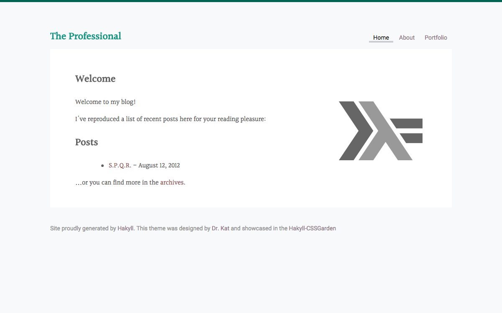

The Professional

The Professional
A clean layout for showcasing your work. Save your files in the “portfolio” folder as .markdown files.
It features a fixed with and navigation at the top of the page, and an it’s sure to give your posts an extra polish.
Installation:
Download the files under the theProfessional folder in the hakyll-cssgarden repo to your root hakyll installation for the boilerplate. Feel free to tweak site.hs and any of the files.
Compile the site generator with hakyll using the command ghc --make site.hs
Then you can view your site locally with ./site rebuild && ./site watch
Usage
Posts
At the top of each blog post saved in the posts folder:
---
title: Carpe Diem
---Syntax Highlighting
Syntax highlighting uses the pandoc formatting.
```hs
fs x = "your code here"
```The colors are defined in syntax.css; which you can edit to your liking.